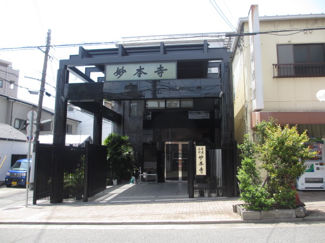

電話
参拝時間や当日の予定など、確実な確認が必要な場合はお電話でお問い合わせください。
078-861-4144
電話アプリを開く（発信は端末で確認）まず案内や質問文例を画面で読むだけでも構いません。必要なときに電話・メール・アクセスの情報をお選びください。問い合わせや参詣を決める必要はありません。

妙本寺は神戸市灘区原田通3丁目1-1にあります。JR灘駅北口、阪急王子公園駅から徒歩約5分です。
参拝時間や当日の予定など、確実な確認が必要な場合はお電話でお問い合わせください。
078-861-4144
電話アプリを開く（発信は端末で確認）お急ぎでないお問い合わせは、メールでもご連絡いただけます。
kobe.myouhonji@gmail.com
メールアプリを開く（送信前に確認）妙本寺は神戸市灘区原田通にあり、JR灘駅北口から徒歩約5分、阪急王子公園駅から徒歩約5分です。
アクセスを見るASK A QUESTION
お問い合わせでは、最初から詳しく説明する必要はありません。このページには、文例を画面で読む方法と、メールアプリで下書きを開く方法があります。どちらも自動送信されません。読むだけで終えることも、ご自身で連絡を選ぶこともできます。
個人情報や詳しいご事情を、最初からすべて伝える必要はありません。寺院からの返信の方法・受付時間などは、ご自身で確認してください。
このページの質問文例は、連絡をする前に内容を確かめるためにも読めます。画面で読むだけなら、メールアプリは開かず、問い合わせも送信されません。読んだ後は、そのままページを閉じても構いません。
このHPには自動予約・自動送信機能はありません。返信までの時間や受け入れ可否は確約していません。連絡・参詣・入信をこの案内から求めるものではありません。
メールが苦手な場合は、電話で確認する方法もあります。次は、話し始めるときの一例です。読むだけで電話はかかりません。
「初めて妙本寺について調べています。参詣（または法話会）について、いくつか確認してもよいでしょうか。開催日と参加方法、事前連絡の必要性を教えてください。」
必要に応じて、服装・費用・移動経路なども質問できます。分からないことは、その場で決めずに確認してから判断できます。
電話番号 078-861-4144 を確認する・発信する →
電話の受付時間、つながるかどうか、参加可否、費用はこのページでは確約していません。個人情報や詳しい事情は必要な範囲でのみお伝えください。
法話会・行事について確認したい方へ： 下の「法話会・行事について」の文例を選ぶと、メールアプリの下書き画面が開きます。選ぶだけでは送信されません。 まだ連絡しない場合は、法話会・行事の文例を画面上で読む（送信なし）こともできます。
移動・座席・聞こえ方について確認したい方へ： 下の専用文例を利用できます。必要なことだけ質問し、診断名など詳しい個人情報は書かなくても構いません。アプリを開かずに専用の文例を読む（送信なし）こともできます。
以下の4つのリンクはメールアプリを開く操作です。このページからメールは自動送信されません。送信するかどうかは、ご自身で決められます。
神戸妙本寺｜問い合わせ文例（非公開・未送信・未回答）
これは下書きであり、寺院からの回答や参詣・法話会の確定案内ではありません。
以下の文例は画面で読むだけでも構いません。必要になった場合だけ、文章を選択し、普段お使いのメールサービスへ貼り付けることもできます。宛先は kobe.myouhonji@gmail.com です。このページから自動送信されることはありません。 電話での確認も選べます。
印刷する場合は、必要な文例を開いてから印刷してください。文例は未記入の下書きです。印刷しても問い合わせは送信されず、寺院からの回答にもなりません。連絡や参詣はご自身の判断でお選びください。
各文例には、「件名：」で始まる件名の行と、その下のメール本文が含まれます。「件名と本文をまとめて選択（送信なし）」を押すと、両方が一度に選択されます。メールに貼り付ける際は、件名の行を件名欄に、空行より下の文章を本文欄に分け、内容を確認してください。選択だけではコピー・送信されません。 コピー・貼り付け・送信はご自身で判断できます。ボタンが使えない場合は、文字を手で選べます。読むだけでも構いません。
キーボードで操作する方へ：Tabキーで文例の見出しへ移動し、EnterまたはSpaceで開閉できます。開いた後はTabキーで「件名と本文を選択」→「この文例だけを印刷」→案内へ戻るリンク（複数ある場合があります）→「この文例の見出しに戻る」の順に移動できます。Shift＋Tabで前へ戻れます。印刷・メール送信は自動実行されず、読むだけでも構いません。
【未送信・未回答の文例】これは問い合わせの下書きです。寺院への送信記録や寺院からの回答ではありません。日時・参加条件は寺院確認待ちです。非公開作業版のため配布・公開しないでください。
件名：妙本寺 初めての参詣について 初めて妙本寺への参詣を考えています。 希望する日時：（必要に応じて記入） 確認したいこと：（必要に応じて記入）
【未送信・未回答の文例】これは問い合わせの下書きです。寺院への送信記録や寺院からの回答ではありません。日時・参加条件は寺院確認待ちです。非公開作業版のため配布・公開しないでください。
件名：妙本寺 法話会・行事について 法話会・行事についてお尋ねします。 関心のある行事：（必要に応じて記入） 希望する日程：（必要に応じて記入） 確認したいこと：（必要に応じて記入）
【未送信・未回答の文例】これは問い合わせの下書きです。寺院への送信記録や寺院からの回答ではありません。日時・参加条件は寺院確認待ちです。非公開作業版のため配布・公開しないでください。
件名：妙本寺 法華講便りについて 法華講便りについて質問があります。 対象の発行年月：（分かる範囲で記入） 記事のテーマ：（分かる範囲で記入） 質問したいこと：（必要に応じて記入）
【未送信・未回答の文例】これは問い合わせの下書きです。寺院への送信記録や寺院からの回答ではありません。日時・参加条件は寺院確認待ちです。非公開作業版のため配布・公開しないでください。
件名：妙本寺 移動・聞こえ方などの事前確認 初めての参詣・法話会について、訪問前に確認したいことがあります。 希望する行事・日時：（決まっていれば記入） 移動経路・座席・聞こえ方などで確認したいこと：（必要な範囲で記入）
設備や対応の可否を保証するものではありません。診断名や詳しい個人情報を記載する必要はありません。必要なことだけを寺院へ確認してください。
連絡するかどうかはご自身でお決めください。氏名・連絡先・詳しい事情をこのHPに入力する必要はありません。返信の時期は保証していません。
※ このHPは問い合わせ内容を収集・送信しません。メールアプリが開かない場合は、上のコピー用文例または電話をご利用ください。費用、参加条件、日時は寺院へご確認ください。
何から確認すればよいか迷ったときは、ご自身の目的に近い案内からお読みください。HPで分かること・寺院に確認することも一覧にしています。ご不明な点は電話またはメールでお問い合わせいただけます。
行事の日時や参加方法は変更される場合があります。訪問前にお電話でご確認ください。
先祖供養、塔婆、法事、葬儀について、妙本寺住職および信徒がお話を伺います。宗教上の儀式・法要については住職の指導に沿ってご案内します。
このQRコードは妙本寺ホームページの案内用です。初めての方向け情報や掲載済みの行事資料をご覧いただけます。行事の日時・会場・参加方法は自動的に最新になるとは限りません。必要な場合だけ寺院へご確認ください。